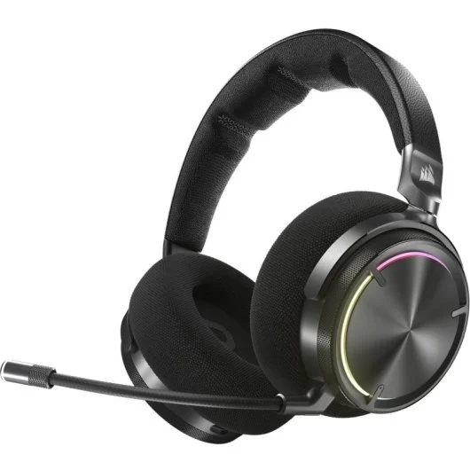

¿Porqué son revolucionarios?
Los cascos con audición personalizada ajustan las frecuencias de audio basándose en las características auditivas de cada persona.
Esto permite una experiencia auditiva optimizada, ofreciendo un sonido más nítido y claro, especialmente en las frecuencias que cada persona escucha con mayor o menor sensibilidad.
-
Al adaptar el sonido a tus necesidades auditivas, estos cascos reducen la necesidad de subir el volumen para compensar frecuencias que no escuchas bien.
Esto ayuda a prevenir la fatiga auditiva, que es común cuando escuchamos a volúmenes más altos durante largos períodos de tiempo.
-
Para quienes no requieren un audífono médico pero tienen una pérdida auditiva leve, los cascos con audición personalizada pueden ser una excelente solución.
Permiten mejorar la calidad de vida al adaptar el sonido sin necesidad de dispositivos médicos invasivos o costosos.
El aspecto futurista de los nuevos auriculares
Evolución en la Historia
Los auriculares con tecnología Sonarworks SoundID representan una evolución significativa en el audio personalizado. A diferencia de los dispositivos tradicionales, que ofrecen un sonido genérico, SoundID ajusta el perfil de audio específicamente para cada usuario a través de una prueba auditiva, mejorando así la calidad y comodidad.
La evolución de estos auriculares ha seguido varios pasos importantes:
- Auriculares simples y ecualizadores: Los primeros auriculares solo ofrecían sonido básico, y luego los ecualizadores permitieron ajustes de frecuencia manuales, pero sin personalización específica para cada usuario.
- Tecnologías de reducción de ruido: La reducción de ruido y el sonido envolvente mejoraron la claridad, pero sin adaptarse a las preferencias individuales de escucha.
- Personalización avanzada con SoundID: SoundID utiliza un perfil auditivo único para cada usuario, corrigiendo desequilibrios de audición, reduciendo la fatiga auditiva y eliminando la necesidad de ajustes manuales.
Impacto: SoundID ha cambiado el audio al ofrecer una experiencia adaptada a cada persona, garantizando comodidad y protección auditiva, además de reemplazar métodos antiguos como los ecualizadores, al ajustar el sonido de manera automática y personalizada.